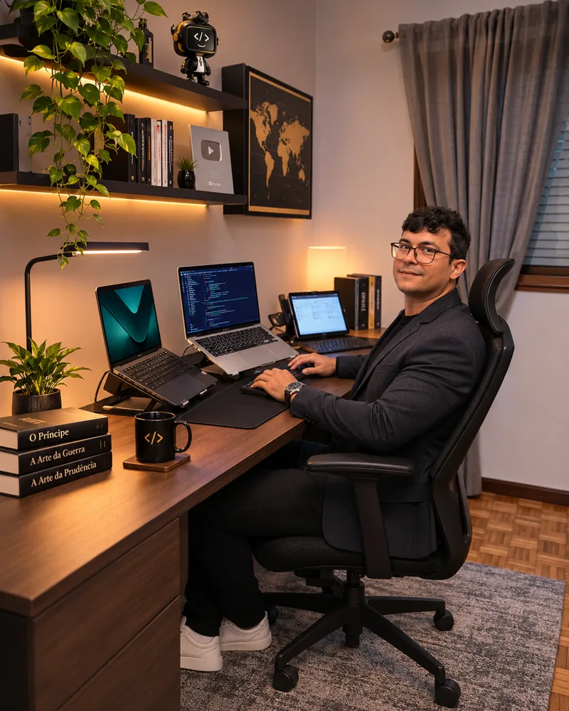

Site profissional
Site institucional ou landing page para apresentar o seu negócio, com galeria, contactos e botão de WhatsApp.
- Design à medida
- Otimizado para telemóvel
- SEO básico incluído
Porto, Portugal · Disponível para novos projetos
Full Stack Developer
Digitalizando o seu mundo.
Desenho e programo sites e aplicações web para negócios que querem crescer — rápidos, bem construídos e fáceis de gerir, do primeiro rascunho até estarem online.
Projetos entregues para
01Trabalho selecionado
Deslize para ver os trabalhos ou clique num projeto para ver os detalhes.
Quer ver mais código? Todos os projetos estão no meu GitHub.
github.com/adrianoaguiarpt ↗02Serviços
Site institucional ou landing page para apresentar o seu negócio, com galeria, contactos e botão de WhatsApp.
Catálogo de produtos com carrinho, área de cliente e preços por tipo de cliente — como no Tech Atacado.
Ferramentas internas, formulários, marcações e integrações com e-mail ou WhatsApp para poupar tempo.
03Como trabalho
Percebo o seu negócio, os seus clientes e o que o site tem de conseguir.
Defino páginas, conteúdo e visual. Só avanço depois da sua aprovação.
Programo e envio uma versão de teste online para ir acompanhando.
Publico no seu domínio, configuro o Google e fico disponível para ajustes.

04Sobre mim
Sou estudante de Engenharia Informática na Universidade Aberta e desenvolvedor Full Stack. Acredito que a tecnologia vai muito além de escrever código: ela é uma ferramenta para resolver problemas, simplificar processos e transformar ideias em soluções que geram valor.
Minha trajetória começou em Camocim, uma cidade no interior do Ceará, no Brasil, onde concluí minha formação básica. Posteriormente, mudei-me para Brasília, onde iniciei minha formação acadêmica em Direito pela Universidade Paulista (UNIP). Com o tempo, novos objetivos e interesses me levaram a repensar meu caminho profissional.
Foi assim que surgiu uma nova etapa da minha história: a mudança para Portugal e a decisão de seguir minha paixão pela tecnologia, iniciando minha formação em Engenharia Informática.
Hoje, meu foco está no desenvolvimento de soluções digitais, criando sites e aplicações que unem funcionalidade, desempenho, organização e uma boa experiência para o usuário.
Trabalho com projetos e clientes em Portugal e no Brasil, valorizando o código limpo, a atenção aos detalhes e, principalmente, a comunicação transparente. Acredito que um bom projeto não depende apenas de tecnologia, mas também de compreender as necessidades de quem está do outro lado.
Sou movido pela curiosidade e pelo desejo constante de evoluir. Acompanho novas tecnologias, exploro ferramentas e aprimoro minhas competências para transformar conhecimento em soluções cada vez melhores.
Meu compromisso é continuar aprendendo, evoluindo e entregando soluções digitais alinhadas às boas práticas e à qualidade que o mercado exige.
Afinal, a tecnologia está sempre evoluindo — e eu escolhi evoluir com ela.
Adriano Aguiar
05Formação
Ciência da computação, engenharia de software, algoritmos e sistemas — a base teórica que sustenta a prática.
Frontend, backend, bases de dados, APIs REST e DevOps, aplicados em projetos.
Estruturas de dados, algoritmos e resolução de problemas com C, Python e SQL.
Cloud computing, serviços Azure, segurança e boas práticas de infraestrutura.
06Contacto
Conte-me o que precisa — respondo normalmente no mesmo dia, com uma proposta clara e sem compromisso.